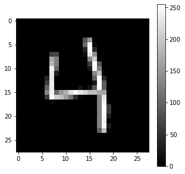
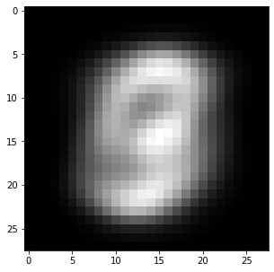
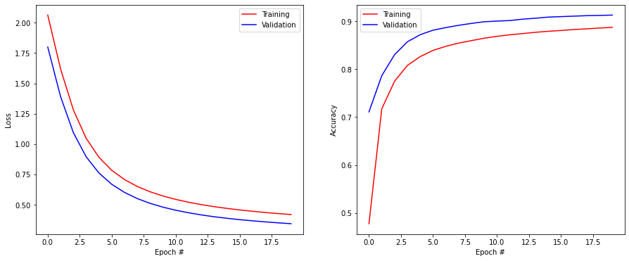
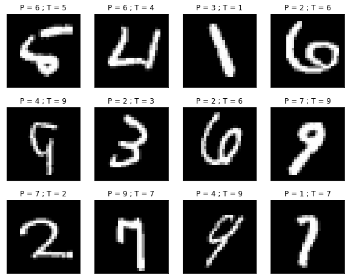
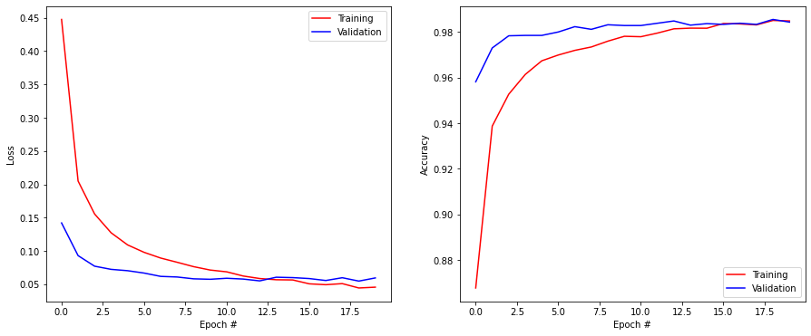

import numpy as np
import matplotlib.pyplot as plt
import tensorflow as tf
print(tf.__version__)2.7.0The goal of this exercise is to train a simple MLP on the MNIST digit classification dataset, the “Hello World!” of machine learning. MNIST was created by Yann LeCun to benchmark supervised learning algorithms. State-of the art is at 99.7% accuracy on the test set (using convolutional deep networks). See this link to see the different approaches : http://yann.lecun.com/exdb/mnist
In MNIST, each input is a 28x28 grayscale image representing digits between 0 and 9. The training set has 60.000 examples, the test set 10.000.
Instead of programming explicitly the MLP like in the previous exercise, we will now use Keras https://keras.io, a high-level API to tensorflow https://tensorflow.org.
You need first to install tensorflow 2.x if not done already. On Colab, tensorflow is already installed. Even if you are using Anaconda, it is recommended to install tensorflow with pip:
pip install tensorflowimport numpy as np
import matplotlib.pyplot as plt
import tensorflow as tf
print(tf.__version__)2.7.0Q: Read the documentation of keras at https://keras.io/api/ to get an overview of its structure.
You are provided with a basic poor-performing keras model to get you started. The goal is to extend this model in order to obtain a satisfying accuracy on the test set.
The first step is to download the MNIST dataset. You could download the raw data from http://yann.lecun.com/exdb/mnist and process it, but that would take a while.
Fortunately, keras comes with a utility to automatically download MNIST, split it into training and test set and create nice numpy arrays:
(X_train, t_train), (X_test, t_test) = tf.keras.datasets.mnist.load_data()Have a look at the doc of tf.keras.datasets to see what other datasets you can simply use.
Q: Print the shape of the four numpy arrays (X_train, t_train), (X_test, t_test) and visualize some training examples to better understand what you are going to work on.
print("Training data:", X_train.shape, t_train.shape)
print("Test data:", X_test.shape, t_test.shape)
idx = 682 # for example
x = X_train[idx, :]
t = t_train[idx]
print("x:", x)
print("x (shape):", x.shape)
print("t:", t)
plt.figure(figsize=(5, 5))
plt.imshow(x, cmap="gray")
plt.colorbar()
plt.show()Training data: (60000, 28, 28) (60000,)
Test data: (10000, 28, 28) (10000,)
x: [[ 0 0 0 0 0 0 0 0 0 0 0 0 0 0 0 0 0 0
0 0 0 0 0 0 0 0 0 0]
[ 0 0 0 0 0 0 0 0 0 0 0 0 0 0 0 0 0 0
0 0 0 0 0 0 0 0 0 0]
[ 0 0 0 0 0 0 0 0 0 0 0 0 0 0 0 0 0 0
0 0 0 0 0 0 0 0 0 0]
[ 0 0 0 0 0 0 0 0 0 0 0 0 0 0 0 0 0 0
0 0 0 0 0 0 0 0 0 0]
[ 0 0 0 0 0 0 0 0 0 0 0 0 0 0 83 149 0 0
0 0 0 0 0 0 0 0 0 0]
[ 0 0 0 0 0 0 0 0 0 0 0 0 0 0 104 245 9 0
0 0 0 0 0 0 0 0 0 0]
[ 0 0 0 0 0 0 0 0 0 0 0 0 0 0 32 254 40 0
0 0 0 0 0 0 0 0 0 0]
[ 0 0 0 0 0 0 0 66 68 0 0 0 0 0 15 232 144 0
0 0 0 0 0 0 0 0 0 0]
[ 0 0 0 0 0 0 0 166 128 0 0 0 0 0 0 135 208 4
0 0 0 0 0 0 0 0 0 0]
[ 0 0 0 0 0 0 0 181 128 0 0 0 0 0 0 64 254 88
0 0 0 0 0 0 0 0 0 0]
[ 0 0 0 0 0 0 0 240 105 0 0 0 0 0 0 24 245 126
0 0 0 0 0 0 0 0 0 0]
[ 0 0 0 0 0 0 0 232 30 0 0 0 0 0 0 0 136 190
4 0 0 0 0 0 0 0 0 0]
[ 0 0 0 0 0 0 36 230 0 0 0 0 0 0 0 0 96 255
41 0 0 0 0 0 0 0 0 0]
[ 0 0 0 0 0 0 60 236 0 0 0 0 0 0 0 0 23 254
92 0 0 0 0 0 0 0 0 0]
[ 0 0 0 0 0 0 102 236 0 0 0 0 0 20 1 21 85 254
92 0 0 0 0 0 0 0 0 0]
[ 0 0 0 0 0 0 133 244 104 150 177 222 252 227 213 188 189 167
165 0 0 0 0 0 0 0 0 0]
[ 0 0 0 0 0 0 58 251 205 191 157 117 44 7 0 0 0 129
227 0 0 0 0 0 0 0 0 0]
[ 0 0 0 0 0 0 0 10 3 0 0 0 0 0 0 0 0 129
241 6 0 0 0 0 0 0 0 0]
[ 0 0 0 0 0 0 0 0 0 0 0 0 0 0 0 0 0 129
254 59 0 0 0 0 0 0 0 0]
[ 0 0 0 0 0 0 0 0 0 0 0 0 0 0 0 0 0 129
254 59 0 0 0 0 0 0 0 0]
[ 0 0 0 0 0 0 0 0 0 0 0 0 0 0 0 0 0 129
247 31 0 0 0 0 0 0 0 0]
[ 0 0 0 0 0 0 0 0 0 0 0 0 0 0 0 0 0 129
240 0 0 0 0 0 0 0 0 0]
[ 0 0 0 0 0 0 0 0 0 0 0 0 0 0 0 0 0 129
246 27 0 0 0 0 0 0 0 0]
[ 0 0 0 0 0 0 0 0 0 0 0 0 0 0 0 0 0 93
193 8 0 0 0 0 0 0 0 0]
[ 0 0 0 0 0 0 0 0 0 0 0 0 0 0 0 0 0 0
0 0 0 0 0 0 0 0 0 0]
[ 0 0 0 0 0 0 0 0 0 0 0 0 0 0 0 0 0 0
0 0 0 0 0 0 0 0 0 0]
[ 0 0 0 0 0 0 0 0 0 0 0 0 0 0 0 0 0 0
0 0 0 0 0 0 0 0 0 0]
[ 0 0 0 0 0 0 0 0 0 0 0 0 0 0 0 0 0 0
0 0 0 0 0 0 0 0 0 0]]
x (shape): (28, 28)
t: 4
In this exercise, we are going to use a regular MLP (with fully-connected layers). Convolutional layers will be seen next time.
We therefore need to transform the 28x28 input matrix into a 784 vector. Additionally, pixel values are integers between 0 and 255. We have to rescale them to floating values in [0, 1].
X_train = X_train.reshape(X_train.shape[0], 784).astype('float32') / 255.
X_test = X_test.reshape(X_test.shape[0], 784).astype('float32') / 255.We saw in the last exercise that mean removal is crucial when training a neural network. The following cell removes the mean image of the training set from all examples.
Note: you could also divide by the standard deviation to have a full normalization, but it does not bring much here.
X_mean = np.mean(X_train, axis=0)
X_train -= X_mean
X_test -= X_mean
plt.figure(figsize=(5, 5))
plt.imshow(X_mean.reshape((28, 28))*255, cmap="gray")
plt.show()
The last preprocessing step is to perform one-hot encoding of the output labels. We want for example the digit 4 (index 5 in the outputs t) to be represented by the vector:
[0. 0. 0. 0. 1. 0. 0. 0. 0. 0.]
keras offers the utility utils.to_categorical to do that on the whole data:
T_train = tf.keras.utils.to_categorical(t_train, 10)
T_test = tf.keras.utils.to_categorical(t_test, 10)
print(T_train[idx])[0. 0. 0. 0. 1. 0. 0. 0. 0. 0.]All set! The data is ready to be learned by a neural network. You should normally not have to re-run those cells again. If you do, do not forget to run all of them sequentially.
Let’s now define a simple MLP with keras. When using a notebook, you can recreate models by simply re-running the cell, but this does not delete the previous networks which may end up filling your RAM. It is therefore good practice to start by telling tensorflow to delete all previous models (if this is what you want):
tf.keras.backend.clear_session()One way to define a neural network in keras is by stacking layers in a Sequential() model (you can later have a look at the doc of Model() for directed acyclic graphs).
model = tf.keras.models.Sequential()The input layer has 784 neurons, one per pixel in the input image. We only need to define a placeholder of the correct size to represent inputs and add() it to the model as its first layer:
model.add(tf.keras.layers.Input(shape=(784,)))The input layer goes into a hidden, fully-connected, layer of 100 neurons using the logistic (or sigmoid) transfer function This can be specified by adding to the model a Dense layer (in the sense “fully-connected”) with 100 units (another name for neuron), followed by an Activation layer using the ‘sigmoid’ function:
model.add(tf.keras.layers.Dense(units=100))
model.add(tf.keras.layers.Activation('sigmoid')) The weight matrix and the biases are intialized automatically using the Glorot uniform scheme (seen in the last exercise) for the weights and zeros for the biases. Check the doc of the Dense layer to see how to change this: https://keras.io/layers/core/#dense.
We then add a softmax layer as output layer (classification problem), with 10 units (one per digit):
model.add(tf.keras.layers.Dense(units=10))
model.add(tf.keras.layers.Activation('softmax')) Weights and biases are initialized in the same manner. That’s all, keras now knows how to transform the input vector into class probabilities using randomly initialized weights!
For training, we need to choose an optimizer (learning rule). Several optimizers are available (https://keras.io/optimizers/). We pick simply Stochastic Gradient Descent with a learning rate of 0.01:
optimizer = tf.keras.optimizers.SGD(learning_rate=0.01)The last step is to compile the network, so that keras computes how to implement the backpropagation algorithm. You need to specify:
After the call to compile(), the neural network is instantiated and ready to learn.
# Delete all previous models to free memory
tf.keras.backend.clear_session()
# Sequential model
model = tf.keras.models.Sequential()
# Input layer representing the 784 pixels
model.add(tf.keras.layers.Input(shape=(784,)))
# Hidden layer with 100 logistic neurons
model.add(tf.keras.layers.Dense(units=100))
model.add(tf.keras.layers.Activation('sigmoid'))
# Softmax output layer over 10 classes
model.add(tf.keras.layers.Dense(units=10))
model.add(tf.keras.layers.Activation('softmax'))
# Learning rule
optimizer = tf.keras.optimizers.SGD(learning_rate=0.01)
# Loss function
model.compile(
loss='categorical_crossentropy', # loss function
optimizer=optimizer, # learning rule
metrics=['accuracy'] # show accuracy
)A good practice after creating the model is to call model.summary() to see how many layers you have created and how many parameters each layer has.
Q: Explain why you obtain this numbers of parameters in each layer.
print(model.summary())Model: "sequential"
_________________________________________________________________
Layer (type) Output Shape Param #
=================================================================
dense (Dense) (None, 100) 78500
activation (Activation) (None, 100) 0
dense_1 (Dense) (None, 10) 1010
activation_1 (Activation) (None, 10) 0
=================================================================
Total params: 79,510
Trainable params: 79,510
Non-trainable params: 0
_________________________________________________________________
NoneA: The hidden layer has a weight matrix of size 784x100 and 100 biases, what makes 78500 free parameters. The output layer has a weight matrix of size 100x10 and 10 biases, so 1010 parameters.
Note that we have more free parameters than training examples, we are going to have to regularize quite hard…
Now is time to train the network on MNIST. The following cell creates a History() object that will record the progress of your network.
It then calls the model.fit() method, which tells the network to learn the MNIST dataset defined by the (X_train, Y_train) arrays. You have to specify:
model.compile() in the History() object.The training process can take a while depending on how big your network is and how many data samples you have. You can interrupt the kernel using the menu if you want to stop the processing in the cell.
# History tracks the evolution of the metrics during learning
history = tf.keras.callbacks.History()
# Training procedure
model.fit(
X_train, T_train, # training data
batch_size=128, # batch size
epochs=20, # Maximum number of epochs
validation_split=0.1, # Perceptage of training data used for validation
callbacks=[history] # Track the metrics at the end of each epoch
)2022-11-15 10:08:28.454399: W tensorflow/core/platform/profile_utils/cpu_utils.cc:128] Failed to get CPU frequency: 0 Hz
2022-11-15 10:08:28.566032: I tensorflow/core/grappler/optimizers/custom_graph_optimizer_registry.cc:112] Plugin optimizer for device_type GPU is enabled.Epoch 1/20
422/422 [==============================] - ETA: 0s - loss: 2.0681 - accuracy: 0.44192022-11-15 10:08:33.845344: I tensorflow/core/grappler/optimizers/custom_graph_optimizer_registry.cc:112] Plugin optimizer for device_type GPU is enabled.422/422 [==============================] - 6s 10ms/step - loss: 2.0681 - accuracy: 0.4419 - val_loss: 1.8156 - val_accuracy: 0.6558
Epoch 2/20
422/422 [==============================] - 4s 9ms/step - loss: 1.6310 - accuracy: 0.6920 - val_loss: 1.4084 - val_accuracy: 0.7712
Epoch 3/20
422/422 [==============================] - 4s 10ms/step - loss: 1.2927 - accuracy: 0.7657 - val_loss: 1.1082 - val_accuracy: 0.8215
Epoch 4/20
422/422 [==============================] - 4s 9ms/step - loss: 1.0546 - accuracy: 0.8022 - val_loss: 0.9044 - val_accuracy: 0.8483
Epoch 5/20
422/422 [==============================] - 4s 9ms/step - loss: 0.8940 - accuracy: 0.8231 - val_loss: 0.7672 - val_accuracy: 0.8638
Epoch 6/20
422/422 [==============================] - 4s 9ms/step - loss: 0.7839 - accuracy: 0.8373 - val_loss: 0.6718 - val_accuracy: 0.8752
Epoch 7/20
422/422 [==============================] - 5s 11ms/step - loss: 0.7056 - accuracy: 0.8467 - val_loss: 0.6032 - val_accuracy: 0.8810
Epoch 8/20
422/422 [==============================] - 4s 11ms/step - loss: 0.6479 - accuracy: 0.8536 - val_loss: 0.5519 - val_accuracy: 0.8875
Epoch 9/20
422/422 [==============================] - 4s 10ms/step - loss: 0.6037 - accuracy: 0.8600 - val_loss: 0.5124 - val_accuracy: 0.8917
Epoch 10/20
422/422 [==============================] - 4s 10ms/step - loss: 0.5689 - accuracy: 0.8645 - val_loss: 0.4812 - val_accuracy: 0.8963
Epoch 11/20
422/422 [==============================] - 4s 10ms/step - loss: 0.5408 - accuracy: 0.8680 - val_loss: 0.4560 - val_accuracy: 0.8992
Epoch 12/20
422/422 [==============================] - 4s 9ms/step - loss: 0.5177 - accuracy: 0.8711 - val_loss: 0.4352 - val_accuracy: 0.9020
Epoch 13/20
422/422 [==============================] - 4s 10ms/step - loss: 0.4982 - accuracy: 0.8746 - val_loss: 0.4177 - val_accuracy: 0.9047
Epoch 14/20
422/422 [==============================] - 5s 11ms/step - loss: 0.4817 - accuracy: 0.8771 - val_loss: 0.4031 - val_accuracy: 0.9053
Epoch 15/20
422/422 [==============================] - 4s 10ms/step - loss: 0.4674 - accuracy: 0.8790 - val_loss: 0.3902 - val_accuracy: 0.9077
Epoch 16/20
422/422 [==============================] - 4s 10ms/step - loss: 0.4550 - accuracy: 0.8811 - val_loss: 0.3791 - val_accuracy: 0.9083
Epoch 17/20
422/422 [==============================] - 4s 10ms/step - loss: 0.4440 - accuracy: 0.8827 - val_loss: 0.3695 - val_accuracy: 0.9092
Epoch 18/20
422/422 [==============================] - 4s 10ms/step - loss: 0.4343 - accuracy: 0.8846 - val_loss: 0.3609 - val_accuracy: 0.9097
Epoch 19/20
422/422 [==============================] - 4s 10ms/step - loss: 0.4256 - accuracy: 0.8860 - val_loss: 0.3533 - val_accuracy: 0.9115
Epoch 20/20
422/422 [==============================] - 4s 10ms/step - loss: 0.4177 - accuracy: 0.8876 - val_loss: 0.3463 - val_accuracy: 0.9118<keras.callbacks.History at 0x167f0b700>The training has now run for 20 epochs on the training set. You see the evolution of loss function and accuracy for both the training and validation sets.
To test your trained model on the test set, you can call model.evaluate():
score = model.evaluate(X_test, T_test, verbose=0)
print('Test loss:', score[0])
print('Test accuracy:', score[1])Test loss: 0.39101865887641907
Test accuracy: 0.8957000374794006You can also use the History() object to visualize the evolution of the the training and validation accuracy during learning.
plt.figure(figsize=(15, 6))
plt.subplot(121)
plt.plot(history.history['loss'], '-r', label="Training")
plt.plot(history.history['val_loss'], '-b', label="Validation")
plt.xlabel('Epoch #')
plt.ylabel('Loss')
plt.legend()
plt.subplot(122)
plt.plot(history.history['accuracy'], '-r', label="Training")
plt.plot(history.history['val_accuracy'], '-b', label="Validation")
plt.xlabel('Epoch #')
plt.ylabel('Accuracy')
plt.legend()
plt.show()
Q: Did overfitting occur during learning? Why? Looking at the curves, does it make sense to continue learning for much more epochs?
A: No, the training accuracy is always below the validation accuracy. The model is too small to overfit. The accuracy has started saturating, it will not get much better (perhaps one percent or two) or very slowly (you can let it learn for 500 epochs or more to see it).
The following cell makes predictions on the test set (model.predict(X_test)), computes the predicted classes by looking at the maximum probability for each example and displays some misclassified examples. The title of each subplot denotes the predicted class and the ground truth.
Q: Are some mistakes understandable?
Y_test = model.predict(X_test)
c_test = np.argmax(Y_test, axis=-1)
misclassification = (c_test != t_test).nonzero()[0]
plt.figure(figsize=(10, 8))
for i in range(12):
plt.subplot(3, 4, i+1)
plt.imshow((X_test[misclassification[i], :] + X_mean).reshape((28, 28)), cmap=plt.cm.gray, interpolation='nearest')
plt.title('P = ' + str(c_test[misclassification[i]]) + ' ; T = ' + str(t_test[misclassification[i]]))
plt.xticks([]); plt.yticks([])
plt.show()2022-11-15 10:10:52.113574: I tensorflow/core/grappler/optimizers/custom_graph_optimizer_registry.cc:112] Plugin optimizer for device_type GPU is enabled.
With the provided model, you probably obtained a final accuracy on the test set around 90%. That is lame. The state-of-the-art performance is 99.7%.
The goal of this exercise is now to modify the network in order to obtain an accuracy of 98% (or more) in 20 epochs only.
You are free to use any improvement on the basic model, using the doc of Keras. Here are some suggestions:
Change the learning rate of SGD.
Change the number of neurons in the hidden layer.
Change the number of hidden layers (just stack another Dense layer in the model).
Beware: you do not have three weeks in front of you, so keep the complexity of your model in a reasonable range.
Change the transfer function of the hidden neurons. See https://keras.io/activations/ for the different possibilities in keras. Check in particular the Rectifier Linear Unit (ReLU).
Change the learning rule. Instead of the regular SGD, use for example the Nesterov Momentum method:
optimizer = tf.keras.optimizers.SGD(lr=0.1, decay=1e-6, momentum=0.9, nesterov=True)or the Adam learning rule:
optimizer = tf.keras.optimizers.Adam(lr=0.01)Change the batch size. What impact does it have on training time?
Apply L2- or L1-regularization to the weight updates to avoid overfitting https://keras.io/regularizers/:
model.add(tf.keras.layers.Dense(50, kernel_regularizer=tf.keras.regularizers.l2(0.0001)))model.add(tf.keras.layers.Dropout(0.5))model.add(tf.keras.layers.Dense(100)) # Weights
model.add(tf.keras.layers.BatchNormalization()) # Batch normalization
model.add(tf.keras.layers.Activation('relu')) # Transfer functionHere is a proposal which obtains 98% accuracy in a reasonable time. There are many other possible solutions, perhaps you found even better…
# Delete all previous models to free memory
tf.keras.backend.clear_session()
# Sequential model
model = tf.keras.models.Sequential()
# Input layer representing the 784 pixels
model.add(tf.keras.layers.Input(shape=(784,)))
# Hidden layer with 150 relu neurons, BN and dropout
model.add(tf.keras.layers.Dense(units=150))
model.add(tf.keras.layers.BatchNormalization())
model.add(tf.keras.layers.Activation('relu'))
model.add(tf.keras.layers.Dropout(0.3))
# Second hidden layer with 100 relu neurons, BN and dropout
model.add(tf.keras.layers.Dense(100))
model.add(tf.keras.layers.BatchNormalization())
model.add(tf.keras.layers.Activation('relu'))
model.add(tf.keras.layers.Dropout(0.3))
# Softmax output layer over 10 classes
model.add(tf.keras.layers.Dense(10))
model.add(tf.keras.layers.Activation('softmax'))
# Learning rule
optimizer = tf.keras.optimizers.Adam(learning_rate=0.001)
# Loss function
model.compile(
loss='categorical_crossentropy', # loss function
optimizer=optimizer, # learning rule
metrics=['accuracy'] # show accuracy
)
print(model.summary())
# Training
history = tf.keras.callbacks.History()
model.fit(
X_train, T_train,
batch_size=128,
epochs=20,
validation_split=0.1,
callbacks=[history]
)
# Testing
score = model.evaluate(X_test, T_test, verbose=0)
print('Test loss:', score[0])
print('Test accuracy:', score[1])
plt.figure(figsize=(15, 6))
plt.subplot(121)
plt.plot(history.history['loss'], '-r', label="Training")
plt.plot(history.history['val_loss'], '-b', label="Validation")
plt.xlabel('Epoch #')
plt.ylabel('Loss')
plt.legend()
plt.subplot(122)
plt.plot(history.history['accuracy'], '-r', label="Training")
plt.plot(history.history['val_accuracy'], '-b', label="Validation")
plt.xlabel('Epoch #')
plt.ylabel('Accuracy')
plt.legend()
plt.show()Model: "sequential"
_________________________________________________________________
Layer (type) Output Shape Param #
=================================================================
dense (Dense) (None, 150) 117750
batch_normalization (BatchN (None, 150) 600
ormalization)
activation (Activation) (None, 150) 0
dropout (Dropout) (None, 150) 0
dense_1 (Dense) (None, 100) 15100
batch_normalization_1 (Batc (None, 100) 400
hNormalization)
activation_1 (Activation) (None, 100) 0
dropout_1 (Dropout) (None, 100) 0
dense_2 (Dense) (None, 10) 1010
activation_2 (Activation) (None, 10) 0
=================================================================
Total params: 134,860
Trainable params: 134,360
Non-trainable params: 500
_________________________________________________________________
None
Epoch 1/202022-11-15 10:11:13.789513: I tensorflow/core/grappler/optimizers/custom_graph_optimizer_registry.cc:112] Plugin optimizer for device_type GPU is enabled.422/422 [==============================] - ETA: 0s - loss: 0.4461 - accuracy: 0.87132022-11-15 10:11:21.420832: I tensorflow/core/grappler/optimizers/custom_graph_optimizer_registry.cc:112] Plugin optimizer for device_type GPU is enabled.422/422 [==============================] - 8s 16ms/step - loss: 0.4461 - accuracy: 0.8713 - val_loss: 0.1411 - val_accuracy: 0.9610
Epoch 2/20
422/422 [==============================] - 7s 16ms/step - loss: 0.2075 - accuracy: 0.9379 - val_loss: 0.0954 - val_accuracy: 0.9727
Epoch 3/20
422/422 [==============================] - 7s 16ms/step - loss: 0.1546 - accuracy: 0.9533 - val_loss: 0.0853 - val_accuracy: 0.9740
Epoch 4/20
422/422 [==============================] - 7s 16ms/step - loss: 0.1280 - accuracy: 0.9615 - val_loss: 0.0762 - val_accuracy: 0.9777
Epoch 5/20
422/422 [==============================] - 7s 16ms/step - loss: 0.1112 - accuracy: 0.9653 - val_loss: 0.0703 - val_accuracy: 0.9795
Epoch 6/20
422/422 [==============================] - 7s 16ms/step - loss: 0.0966 - accuracy: 0.9706 - val_loss: 0.0716 - val_accuracy: 0.9792
Epoch 7/20
422/422 [==============================] - 7s 16ms/step - loss: 0.0876 - accuracy: 0.9717 - val_loss: 0.0681 - val_accuracy: 0.9808
Epoch 8/20
422/422 [==============================] - 7s 17ms/step - loss: 0.0826 - accuracy: 0.9743 - val_loss: 0.0647 - val_accuracy: 0.9830
Epoch 9/20
422/422 [==============================] - 7s 16ms/step - loss: 0.0758 - accuracy: 0.9760 - val_loss: 0.0631 - val_accuracy: 0.9850
Epoch 10/20
422/422 [==============================] - 7s 16ms/step - loss: 0.0689 - accuracy: 0.9778 - val_loss: 0.0651 - val_accuracy: 0.9820
Epoch 11/20
422/422 [==============================] - 7s 16ms/step - loss: 0.0667 - accuracy: 0.9785 - val_loss: 0.0640 - val_accuracy: 0.9822
Epoch 12/20
422/422 [==============================] - 7s 16ms/step - loss: 0.0631 - accuracy: 0.9795 - val_loss: 0.0601 - val_accuracy: 0.9842
Epoch 13/20
422/422 [==============================] - 7s 16ms/step - loss: 0.0580 - accuracy: 0.9811 - val_loss: 0.0591 - val_accuracy: 0.9835
Epoch 14/20
422/422 [==============================] - 7s 16ms/step - loss: 0.0545 - accuracy: 0.9823 - val_loss: 0.0569 - val_accuracy: 0.9842
Epoch 15/20
422/422 [==============================] - 7s 16ms/step - loss: 0.0526 - accuracy: 0.9826 - val_loss: 0.0623 - val_accuracy: 0.9842
Epoch 16/20
422/422 [==============================] - 7s 16ms/step - loss: 0.0517 - accuracy: 0.9833 - val_loss: 0.0598 - val_accuracy: 0.9852
Epoch 17/20
422/422 [==============================] - 7s 16ms/step - loss: 0.0497 - accuracy: 0.9837 - val_loss: 0.0621 - val_accuracy: 0.9845
Epoch 18/20
422/422 [==============================] - 6s 15ms/step - loss: 0.0465 - accuracy: 0.9849 - val_loss: 0.0633 - val_accuracy: 0.9833
Epoch 19/20
422/422 [==============================] - 7s 16ms/step - loss: 0.0464 - accuracy: 0.9846 - val_loss: 0.0590 - val_accuracy: 0.9855
Epoch 20/20
422/422 [==============================] - 7s 16ms/step - loss: 0.0406 - accuracy: 0.9860 - val_loss: 0.0639 - val_accuracy: 0.9833
Test loss: 0.06750822812318802
Test accuracy: 0.9811000227928162